Objectifs de la leçon
Réaliser un dossier d'analyses pour un jeu d'échecs sur internet.
Durée estimée : 4 heures.
Type d'enseignement : apprentissage en autonomie.
Note : les diagrammes ont été réalisés avec visual paradigm et vous pouvez cliquer ici pour télécharger le project.
Introduction
Réalisons le dossier d'analyse pour un jeu d'échecs sur intenet.
Nous pouvons partir de la description suivante:
Le jeu doit permettre de jouer des parties d'échecs avec d'autres internautes.
Pour pouvoir utiliser l'application, le joueur doit ouvrir un compte, il devra mentionner un nom qui sera utilisé pour l'affichage, un email qui sera utilisé pour identifié le joueur et un mot de passe que l'utilisateur doit écrire deux fois. Ensuite l'application enverra un email avec un lien pour confirmer la possession de l'email. L'utilisateur a aussi la possibilité de créer un compte sur base de son compte facebook.
L'utilisateur doit s'authentifier à l'ouverture d'une session. S'il s'agit d'un compte facebook, l'application demande à facebook d'authentifier l'utilisateur.
S'il a oublié son mot de passe, il peut demander une réinitialisation du mot de passe. L'application envoie alors un email avec un lien vers la page de réinitialisation qui demande à l'utilisateur d'introduire le nouveau mot de passe. L'utilisateur doit introduire deux fois le nouveau mot de passes.
L'utilisateur aura un dashboard (tableau de bord) avec une liste des joueurs connectés qui proposent de jouer une partie d'échecs et une liste des parties déjà jouées par l'utilisateur.
L'utilisateur peut accepter une proposition de partie, dans quel cas la partie d'échec commence.
Il peut aussi proposer une partie, dans quel cas sa proposition est mise en attente qu'un joueur l'accepte.
Il peut revisionner une partie déjà jouée.
Il peut reprendre une partie déjà commencée mais non terminée. Dans quel cas, l'application notifie l'autre joueur.
Il peut inviter un ami facebook dans quel cas l'application enverra un message facebook à son ami.
Un administrateur peut exclure un joueur, supprimer des parties enregistrées ou non et supprimer des propositions de partie.
Techniquement, l'application sera une application web dynamique classique écrite en PHP avec un serveur web nginx et une base de données posgresql. L'application et postgresql seront déployées sur le serveur virtuel (VMWare) loué chez Contabo. Un backup de la base de données sera réalisé toutes les heures et déposé sur un "répertoire" dans le cloud (par exemple AWS S3).
Pour les règles du jeu d'échecs, nous utiliserons une source sur internet. Une rapide recherche nous donne:
Analyse fonctionnel
Nous commençons par l'analyse du domaine, puis les processus et finalement les fonctions.
Modèle du domaine
Nous utilisons le diagramme de classes pour modéliser le jeu d'échecs.
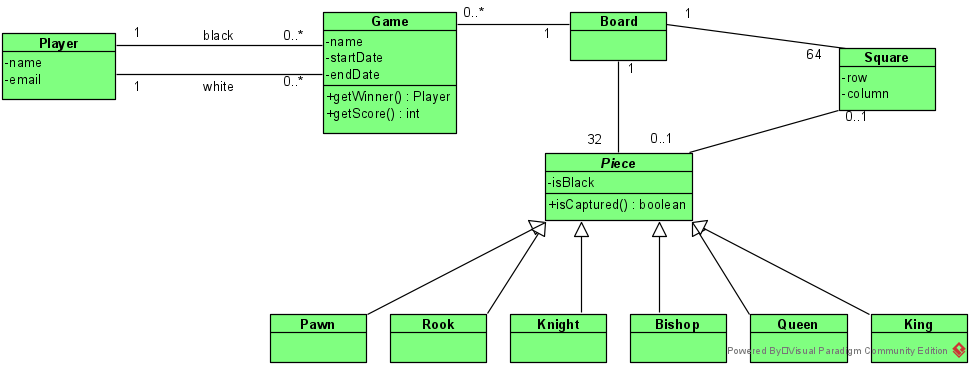{kind=link}
Notons que:
- La classe Piece est abstraite (indiqué par l'italique).
-
Nous avons deux liens entre Player et Game,
car nous devons différencier le joueur noir du joueur blanc
et que noir ou blanc est une caractéristique de l'association
entre Player et Game.
Nous avons préféré cette solution à une solution Player -2---n- Role -n---1- Game où Role a l'attribut isBlack. - Player modélise un joueur. Nous pouvons ajouter d'autres attributs ou retirer les attributs, ce n'est pas très important au niveau du domaine du jeu d'échecs.
-
Nous avons ajouté les méthodes
getWinner(): Player et getScore(): int
car c'est bien la classe Game
qui a pour responsabilité de préciser qui a gagné
et quel est le score.
Nous voyons aussi que nous pourrons coder cela car le perdant sera le joueur qui a "perdu" son roi :Game --- :Board --- :King.isCaptured().
A ma connaissance, il n'y a pas de score dans une partie d'échecs. Mais nous aimons savoir si nous avons l'avantage. Un possibilité est de calculer un score sur base des pièces capturer: +1 pour un pion, +5 pour une tour, +3 pour un cheval ou un fou, +10 pour une reine. Il est logique de donner la responsabilité de calculer le score à la classe Game car c'est le score de la partie. - Piece a la méthode isCaptured(): boolean qui retourne true si la pièce est dans une case, ce qui se traduit dans le modèle par le fait que la pièce n'a pas de lien avec une case. isCaptured retourne false si la pièce est dans une case.
Modèle des processus
Il est difficile de modéliser par un diagramme d'activités l'ensemble des règles du jeu d'échecs. Par contre, nous pouvons facilement illustrer le fait qu'une partie se joue à deux joueurs et consiste à déplacer une pièce tour à tour.
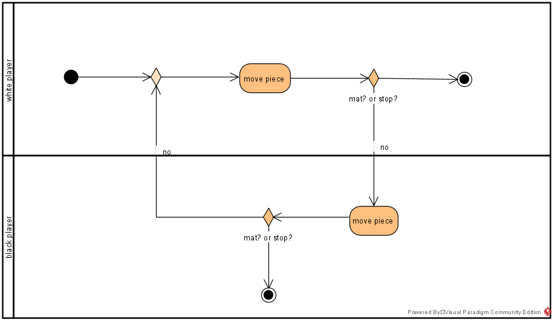{kind=link}
C'est bien un processus du domaine,
mais est-il nécessaire de le réaliser ?
C'est-à-dire, apporte-t'il de l'information nouvelle,
un synthèse?
Personnellement, je pense que non,
que ce modèle est soit connu, soit tellement simple
qu'il sera vite appris.
modèle des fonctions
Nous choisissons de modéliser les fonctions à l'aide de use cases (cas d'utilisation).
Nous commençons par lister les utilisateurs et les noms de cas d'utilisation. Puis nous représentons cela par un diagramme de cas d'utilisation (use case diagram):
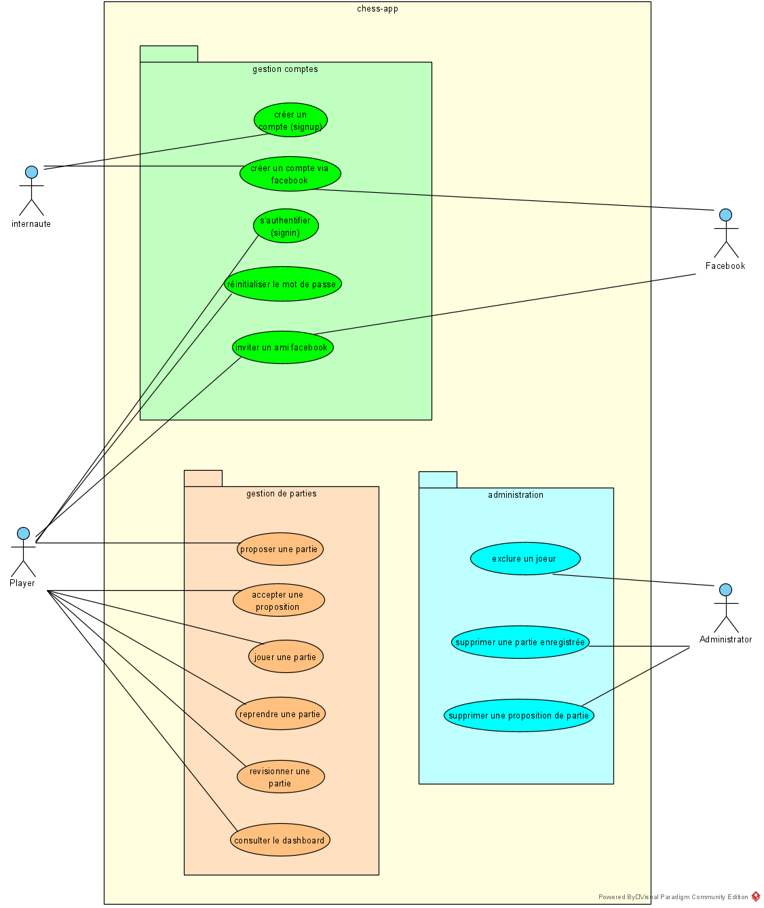{kind=link}
Nous avons regroupé les use cases en trois packages:
- gestion de comptes
- gestion des parties
- administration
Cela est utile car nous avons beaucoup de use cases.
Créer un compte
Description
En tant qu'internaute, je veux pouvoir créer un compte ainsi je peux utiliser l'application.
Acteur
Un internaute.
Préconditions
Avoir accès à un PC connecté à internet. (Est-ce utile de le mentionner?)
Scénario souhaité
- l'internaute complète le formule de création d'utilisateur (signup), il doit préciser son nom de joueur et son email
- l'application envoie un email à l'internaute contenant un lien vers une page d'initialisation du mot de passe
- l'internaute ouvre sa boîte mail, sélectionne l'email et clique sur le lien
- l'application ouvre la page d'initialisation du mot de passe
- l'utilisateur doit introduire un mot de passe à deux reprises
Postconditions
- l'internaute devient un joueur, il peut dès présent s'authentifier et utiliser l'application;
- le joueur est créé, avec l'email comme identifiant, le nom comme nom d'affichage, et le mot de passe.
- le lien vers la page d'initialisation est déactivé (on ne peut plus utiliser le lien)
Scénario "erreur d'email"
Le scénario est identique excepté que l'internaute se trompe dans son email dans l'étape (1).
Deux situations sont possibles:
-
si l'application échoue dans l'envoi de l'email
l'application affiche un message d'erreur,
par exemple:
L'envoie d'une email à votre adresse $votre-email a échoué, êtes-vous certain d'avoir encodé le bon email?et laisse l'utilisateur réencoder l'email. -
l'email existe
et quelqu'un d'autre reçoit l'email.
Ce n'est pas grave, car si cette autre personne clique sur le lien, elle pourra effectivement introduire un mot de passe, mais comme le compte est lié à l'email, ce mot de passe sera lié à son propre email.
Scénario "erreur de mot de passe"
Le sénario est identique au sénario souhaité, excepté qu'à l'étape (5), l'internaute introduit deux mots de passe différents.
L'application indique que les mots de passe ne sont pas identiques et laisse l'utilisateur répéter l'opération.
Scénario "rien ne se passe
Il se peut que l'utilisateur encode son nom et email mais qu'ensuite il n'entreprenne aucune action.
Dans ce cas et après 20 minutes, l'application déactive le lien vers la page de confirmation d'inscription.
Utilisation d'un diagramme d'activités
Nous voyons que c'est compliqué de documenter le use case "créer un compte" avec des scénarios, nous perdons la vue globale.
Dans ce cas, nous pouvons utiliser le diagramme d'activités:
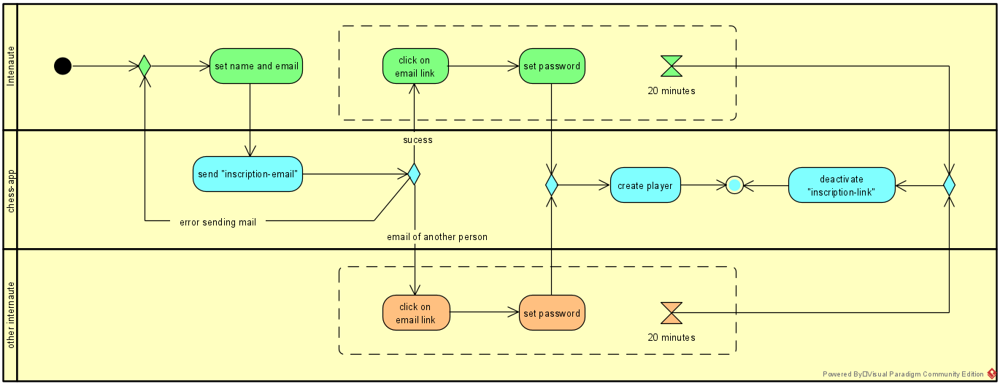{kind=link}
Ce diagramme d'activités ne doit pas être confondu avec le modèle des processus.
Dans le modèle des processus, nous étudions les processus du domaine,
ici nous étudions le processus dans le cadre de l'application.
En conséquence, nous représenterons ici les actions entreprises par l'application, et en général, nous dessinerons un couloir (swimlane) pour l'application (chess-app dans le diagramme.
Le diagramme montre deux points faibles de ce processus de création de compte:
- l'application permet un nombre infini de tentatives set name and password
- l'application laisse un autre internaute finir le processus, ce qui signifie qu'il utilise le nom de l'internaute initiateur du processus.
Nous pouvons bien sûr améliorer cela en limitant le nombres d'essai et en demande à l'utilisateur de créer son nom et mot de passe au moment de la confirmation.
Analyse technique
Nous réalisons les modèles de base de données, de contextes et de déploiements. Les modèles de composants, de classes d'implémentation et d'interfaces dépassent le cadre de ces notes.
Modèle de base de données
Nous utilisons un diagramme relationnel pour le modèle de base de données:
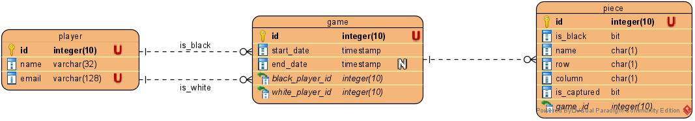{kind=link}
Nous notons que le modèle de base de données est plus simple que le modèle de contexte.
Nous avons effectivement simplifié et éliminé différentes classes:
- Board parce qu'elle ne contient aucune information
- Square parce que les cellules sont toujours les mêmes, "1a", "1b", "1c", ... La seule information que Square c'est via l'association avec Piece qui permet de déterminer la position de la pièce et si la pièce a été capturé. Or nous avons reporté ses informations dans la table Piece.
- Nous n'avons pas de table pawn, rook, knight, ... seulement la table piece avec l'attribut name qui prend les valeurs "P" pour "pawn", "R" pour "rook", "K" pour ...
- Nous avons remplacé les classes Pawn, Rook, Knight, Bishop, Queen et King par l'attribut name dans la table piece.
Après vérification avec les spécifications, nous notons que ce modèle ne permet pas de sauver l'historique d'une partie (cf Il peut revisionner une partie déjà jouée).
Ajout de l'historique
La solution classique est d'ajouter un table de liaison entre game et piece.
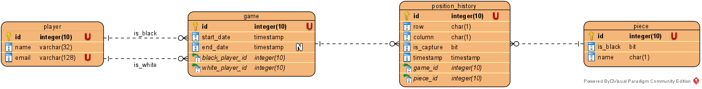{kind=link}
Chaque mouvement est enregistré dans movement et il est possible de reconstituer la position actuelle en sélectionnant le dernier mouvement:
SELECT row, column, is_capture
FROM position_history
WHERE piece_id = 0
ORDER BY timestamp DESC
LIMIT 1;
qui retourne la dernière position de la pièce d'identifiant 0.
Remarquons que LIMIT est propre aux moteurs de base de données mysql ou mariadb.
Mouvement
Nous pouvons aussi penser le jeux d'échec comme une suite de mouvements, ce qui permet d'avoir une version simplifiée pour la base de données:
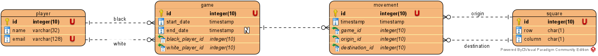{kind=link}
La table principale est alors movement qui précise le mouvement d'une pièce.
Nous avons reporté les informations liées à la cellule dans la table square qui en pratique ne contiendra que 64 éléments.
Ainsi, movement.origin_id indique la cellule d'origine et movement_destination_id indique la cellule de destination.
Dans ce modèle, la base de données est incapable de donner la situation "finale" d'une partie car le moteur de base de données ne connait pas les règles du jeu d'échecs.
Par contre, notre application chess-app sera capable de calculer la position finale des pièces, simplement en réexécutant tous les mouvements, dans l'ordre:
SELECT *
FROM movement m
INNER JOIN square o INNER JOIN o.id = m.origin.id
INNER JOIN square d INNER JOIN d.id = m_destination.id
WHERE m.game_id = 0
ORDER BY m.timestamp
ici pour la partie d'identifiant 0.
Modèle du contexte
L'application chess-app permet à des internautes de jouer aux échecs ensemble, à travers internet. 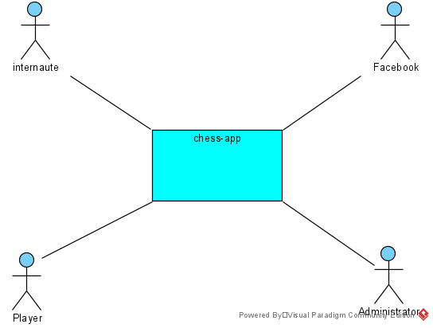
{kind=link}
Modéle de déploiement
L'introduction précise Techniquement, l'application sera une application web dynamique classique écrite en PHP avec un serveur web nginx et une base de données posgresql. L'application et postgresql seront déployées sur le serveur virtuel (VMWare) loué chez Contabo. Un backup de la base de données sera réalisé toutes les heures et déposé sur un "répertoire" dans le cloud (par exemple AWS S3)
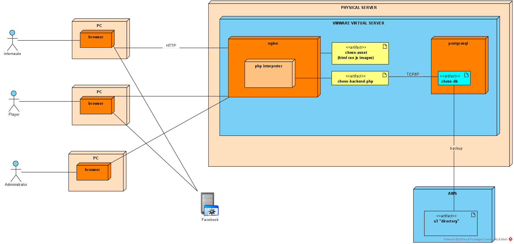{kind=link}
Références
Il y a d'autres analyses du jeu d'échecs disponibles sur internet
-
Software Design Description for CHESS
présente une analyse complète d'une application
( un backup est disponible ici )
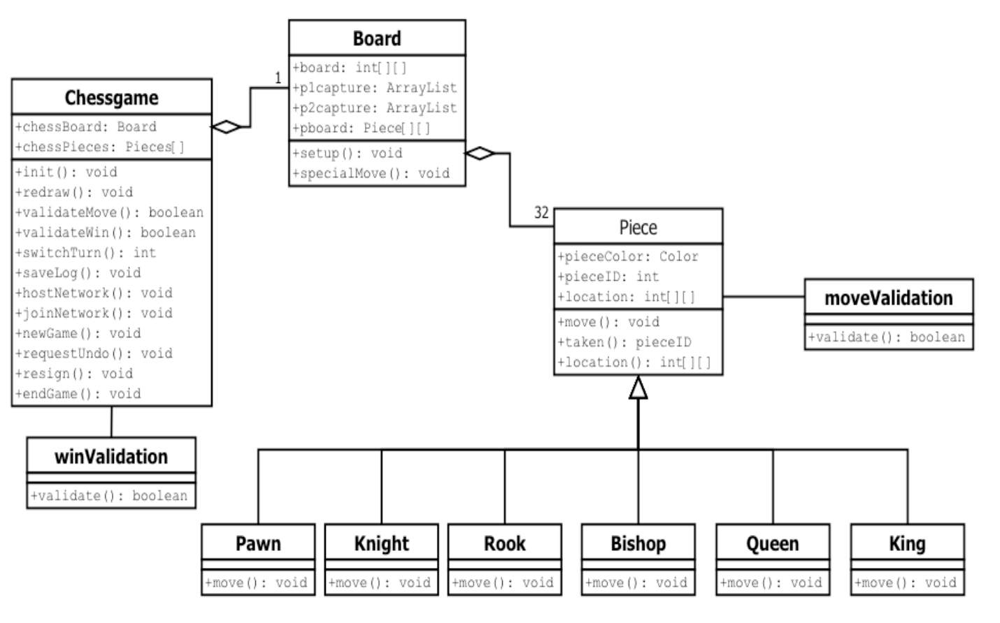 -
stakeoverflow - discussion sur base du diagramme de classes d'implémentation

-
web.archive.org - Sharp Chess
donne une version très différente, basée sur le mouvement
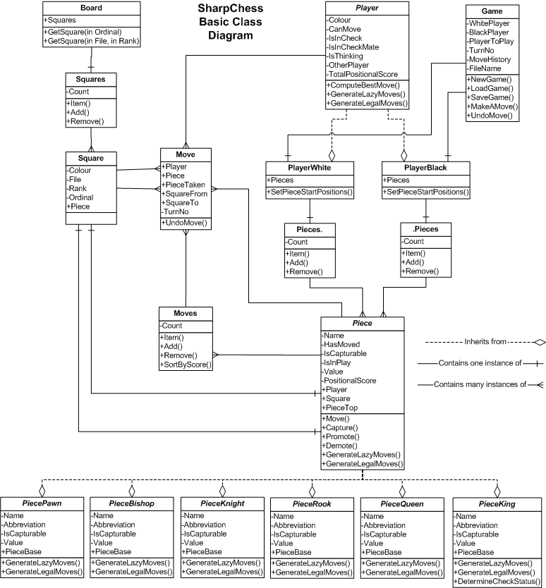 -
Ramakrishna Chess Game donne une version indienne du jeu
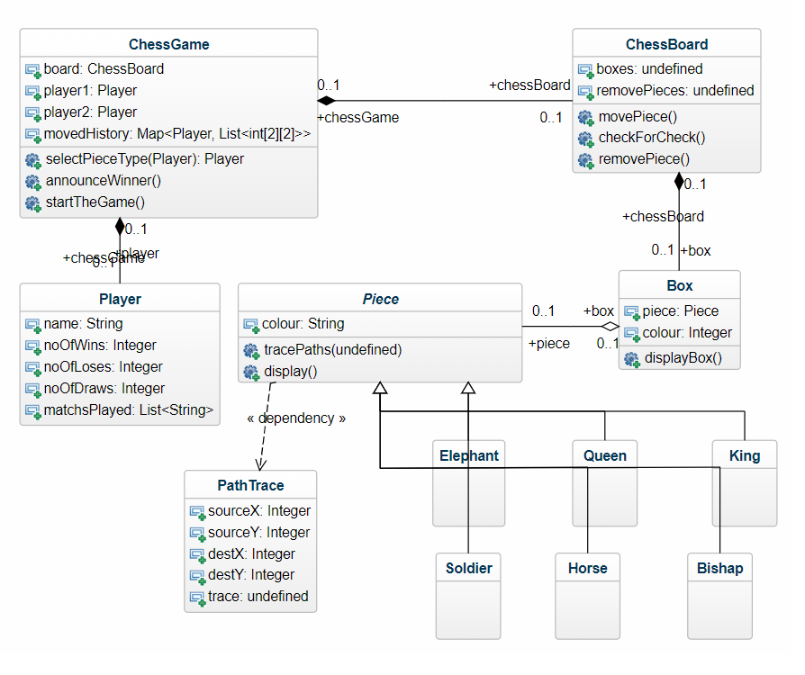 -
code review - Design a chess game using object-oriented principles

avec du code java.
{kind=link}
{kind=link}
{kind=link}